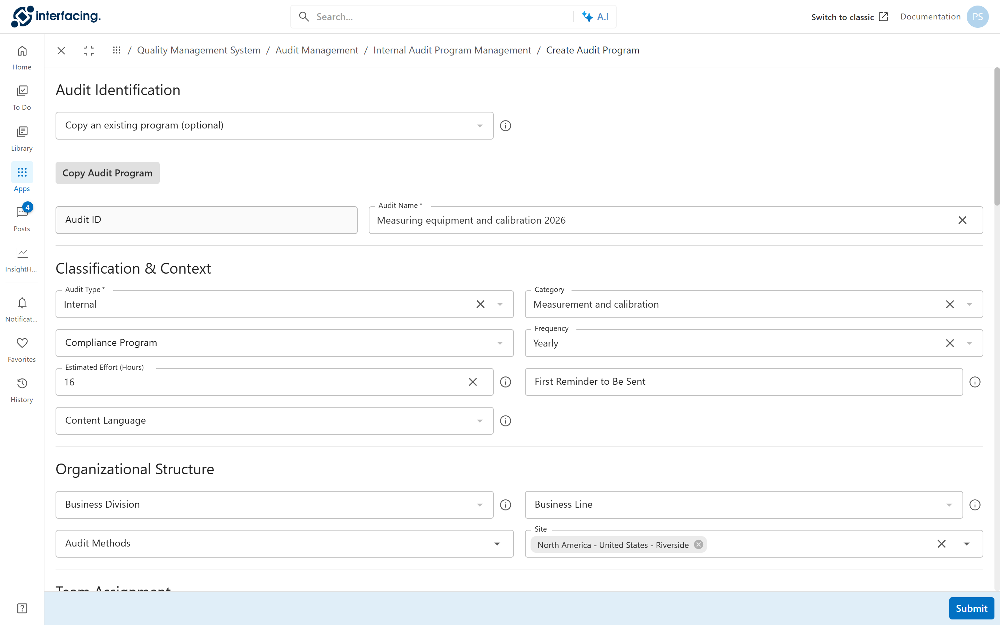
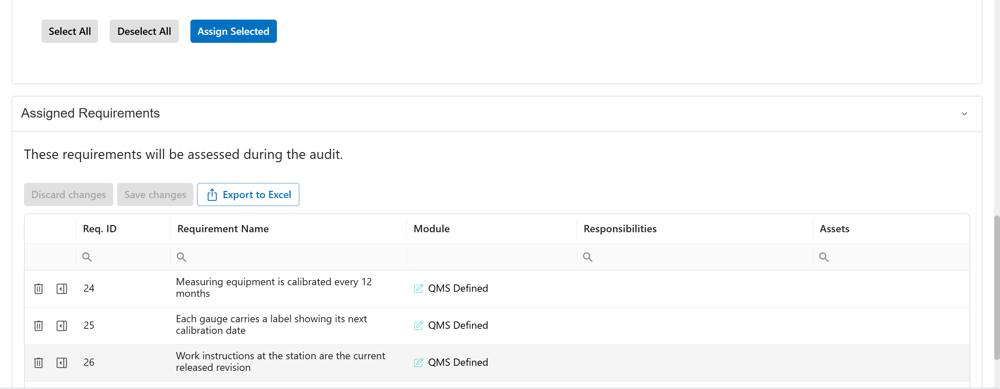
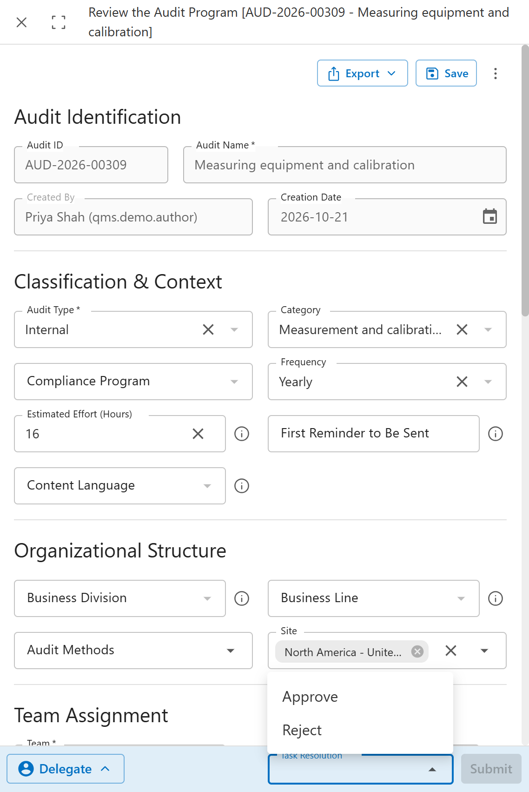

The screens are under Audit Management > Internal Audit Program Management.
Describe the audit
Priya names the program "Measuring equipment and calibration 2026". It is an internal audit about calibration, run once a year at Riverside, and she expects it to take two days of auditor time.
Open Create Audit Program. The page you get is headed New Audit Definition, an older name for the same thing.

12345- Copy an existing program fills the form from an older program. Useful for next year's version.
- Audit Name. The Audit ID is set when you submit.
- Audit Type and Category.
- Frequency: how often the audit runs.
- Site: where it runs.
Further down, Team Assignment picks the audit team. The product fills in Team Leader from the team, and that person approves the program.
Pick what to check
Priya adds R1 to R4. The program is now a fixed list. Every run of it checks the same four rules.
In the Requirements section, tick requirements in Select the Requirements and click Assign Selected. They move to Assigned Requirements.

123- Assign Selected adds the ticked requirements.
- Assigned Requirements: the list the audit will check.
- R1, R2 and R3 are visible; R4 is one row further down.
Click Submit at the bottom of the page when the program is complete.
On the demo system, saving the program kept only the first requirement in the list. Open the program again after you submit and check that every requirement is still under Assigned Requirements.
Get it approved
Marco leads the audit team. He reads the program and approves it. If something is missing, he sends it back to Priya.
Marco gets the task Review the Audit Program in To Do. He picks Approve or Reject in Task Resolution and clicks Submit.

123- The task subject names the program.
- The program now has its Audit ID.
- Approve makes the program ready to plan. Reject sends Priya a task Modify the Audit Program. She fixes it and sends it back for review.
Common mistakes
- Picking the wrong team. The team's leader approves the program and is the only one who can plan it.
- Writing a new program each year. Copy last year's and change what changed.
- Approving a program without reading the requirements. A wrong requirement in the program means a wasted audit.